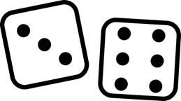

Prev - #16 Mode | Table of Contents | Next - #18 Buy 8 Get 1 Free
rollDice(1) → 6

This exercise uses Python’s random number generating functions to simulate rolling any number of six-sided dice and returning the total sum of the dice roll. This exercise covers random number generation with Python’s random module.
Exercise Description
Write a rollDice() function with a numberOfDice parameter that represents the number of
six-sided dice. The function returns the sum of all of the dice rolls. For this
exercise you must import Python’s random module to
call its random.randint() function for this
exercise.
These Python assert statements stop
the program if their condition is False. Copy them
to the bottom of your solution program. Your solution is correct if the following
assert statements’ conditions are all True. We can’t predict rollDice()’s
random return value, but we can do repeated checks that the return value is
within the correct range of expected values:
assert rollDice(0) == 0
assert rollDice(1000) != rollDice(1000)
for i in range(1000):
assert 1 <= rollDice(1) <= 6
assert 2 <= rollDice(2) <= 12
assert 3 <= rollDice(3) <= 18
assert 100 <= rollDice(100) <= 600
There is an astronomically small chance that the assert rollDice(1000) != rollDice(1000) will fail with a
false positive. This assertion tests that rollDice()
doesn’t simply return the same “random” number each time by simulating rolling
1,000 dice twice and making sure the totals are different for both rolls. But,
of course, there is a chance they’ll come up the same total and cause an AssertionError. In that case, just rerun the assertion
tests. After all, what are the odds of that happening twice?
Try to write a solution based on the information in this description. If you still have trouble solving this exercise, read the Solution Design and Special Cases and Gotchas sections for additional hints.
Prerequisite concepts: import
statements, random module, randint(),
for loops, range(),
augmented assignment operator
Solution Design
First, create a variable to track the running total of the dice
rolls and start it with the value 0. Then make a for loop to loop the same number of times as the numberOfDice parameter. Inside the loop, call the random.randint() function to return a random number
between 1 and 6 and add
this number to the running total. After the loop completes, return the total.
If you don’t know how the random.randint()
function works, you can run import random and help(random.randint) in the interactive shell to view its
documentation. Or you can do an internet search for “python randint” to find information
about the function online.
Special Cases and Gotchas
There are no special cases for this exercise, but remember that
Python’s random.randint() function is inclusive of
its arguments. Calling, for example, range(6) causes
a for loop to loop from 0
up to, but not including, 6. But calling random.randint(1, 6) returns a random number between 1 and 6, including the 1 and the 6. If you roll three
6-sided dice, the range is from 3 to 18, not 1 to 18.
Rolling multiple dice doesn’t produce a uniform distribution:
rolling two 6-sided dice is much more likely to come up with 7 because there
are more combinations that add up to 7 (1 + 6, 2 + 5, 3 + 4, 4 + 3, 5 + 2, and
6 + 1) compared with rolling 2 (1 and 1 only). This is why you would need to
call random.randint(1, 6) twice and add the rolls
together instead of call random.randint(2, 12) once.
Your solution program needs import random
at the top of the program in order to call the random.randint()
function, or else you’ll get a NameError: name 'random' is
not defined error message.)
Now try to write a solution based on the information in the previous sections. If you still have trouble solving this exercise, read the Solution Template section for additional hints.
Solution Template
Try to first write a solution from scratch. But if you have difficulty, you can use the following partial program as a starting place. Copy the following code from https://invpy.com/rolldice-template.py and paste it into your code editor. Replace the underscores with code to make a working program:
# Import the random module for its randint() function.
____ random
def rollDice(numberOfDice):
# Start the sum total at 0:
total = ____
# Run a loop for each die that needs to be rolled:
for i in range(____):
# Add the amount from one 6-sided dice roll to the total:
total += random.randint(____, ____)
# Return the dice roll total:
return total
The complete solution for this exercise is given in Appendix A and https://invpy.com/rolldice.py. You can view each step of this program as it runs under a debugger at https://invpy.com/rolldice-debug/.
Prev - #16 Mode | Table of Contents | Next - #18 Buy 8 Get 1 Free